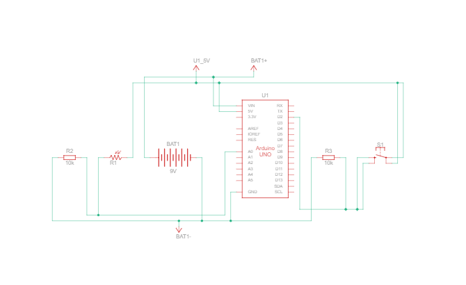
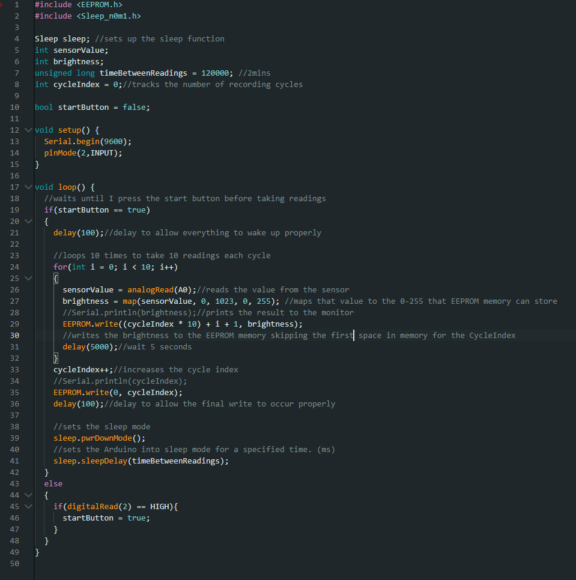

Plant Project
Okay, so this is our first time going off script as it were, and doing our own thing. Our task is to use the Arduino to interact with a plant in some way. The obvious way to complete this challenge seems to be using a moisture sensor to record the moisture of the plant’s soil and alert the user that the plant needs watering. However, I kinda feel like doing my own thing and coming up with something a bit different. Besides, I don’t own a moisture sensor and don’t really feel like buying one so instead I’m going to try to come up with with something that uses only the things provided in the starter kit.
Alright, I’ve come up with a basic idea for the project. What I’m going to do is use the light sensor to track the sunlight throughout the day from different windows in my apartment. The circuit for this should be dead simple. The only thing is figuring out how to store data on the Arduino without having to plug it into a computer. If I want this project to work I need it to be relatively portable and small so that I can fit it onto my partner’s window without causing too much disruption. Theoretically, I could use a laptop and plug the Arduino into that but I think that would be too disruptive. We will see what I can find on the web.
Okay so update I think I figured out the storage problem. I will use something called EEPROM memory. It’s a very small amount of memory that is available on the Arduino Uno board. It can only store 1024 bytes of information so not a lot but for my purposes of just storing a number I think that it will work just fine. I’ve used this video to give me the basics of how EEPROM memory works: https://www.youtube.com/watch?v=Sus96TzvjT4&ab_channel=Electronoobs I think I will write two sketches for this project. One sketch to read off the EEPROM memory and the other for data recording while unplugged. I think I’m ready to make my initial pitch.
My initial pitch went well and I have gotten the green light on this project. First things first I need to make the circuit. So as always, I got out all of the necessary components.
I immediately ran into problems because the leads off of my battery aren’t long enough to fit into the Vin and ground connections on my board so I have had to do some improvisation. I connected them to the breadboard and then from the breadboard I used the power and ground wires to connect to the Arduino. A bit jank but it works.
Next was to set up the photoresistor. This was really simple and I copied the setup from the light theremin exercise that we did in the book.
With that out the way, I started the code. I found a library that handles low-power operation of the Arduino on the Arduino website so I downloaded it and am trying it out in this first run of the write code. In this first test I am not writing to the EEPROM memory I’m just writing to the console. Another thing that I’m doing in this first test of the code is that I’m taking the raw brightness value from the sensor and using the map function to constrain it to the 0-255 limit of a byte of information.
This first test of the code seemed to work well however I realized that I needed some way to “turn on” the data collection that wasn’t just plugging it in. If I just had it so that the data collection started as soon as I plugged in the Arduino I could accidentally overwrite the data that I had at the start.
So I decided that the easiest way to accomplish this was just to add a start button. This was easily done by copying the setup from project 1 of the book.
 Back in the code, I added a simple if statement and bool that would just wait until the button was pressed before starting data collection. This was the code that I used for the first battery-only test. You can see that I am now using the EEPROM memory to test. I am skipping the first byte in the memory and using that to record the number of cycles that were recorded.
This was working out alright but I found in my testing that I wanted more resolution than what the 0-255 scale provided. I really wanted to be able to see the raw sensor data that was coming from the light sensor. It is for this reason that I switched to storing ints rather than bytes. With ints, I would be able to store significantly larger numbers however I would not be able to store as many. Ints take up 2 bytes of information so I would have a maximum of 512 spaces to store data. Initially, I was afraid this would be a problem however I did the math and if I took a light measurement every 5 minutes I could run the test for a maximum of ~42 hours which is more than enough. As long as I didn’t forget to turn off the test I would be fine. I did end up writing some code that would prevent the code from writing data past the maximum however that would end up kicking me later on.

So with my Arduino all set up I started my first test on my window sill at 1:00 a.m. on November, 2nd. I made sure to record the predicted weather for the day in order to try to account for clouds or rain. With everything set up for my first full-scale test running, I went to sleep and went about my day.
The next day I waited until it was dark out before unplugging the power and plugging it into my computer and running my read code. At first, I was excited as it said that it had recorded 155 data points. But as the code spat out the numbers I realized that something had gone wrong as they all read as 0. Looking back at my code I realized that in my effort to prevent the memory from overflowing, I had accidentally written the if statement wrong. I wish I had saved the version of the code that had failed so that I could show it in this blog post but I was so focused on fixing it that I forgot to take a screenshot. In the end, this first full-scale test was a failure however it did give me a chance to step back and double and triple check my code as well as improve the user experience.


The first change that I made was outright removing the if statement and the overflow protection. I realized that I had added a failure mode to the code that would never be necessary with my use case. I then added code that would turn on and off LED 13 to signal to me that the test had started and would flash each time a data point was recorded. This allowed me to know that I had properly started the test and that data was in fact being recorded. Here is the final version of my code.
So yet again I got everything set up. This time I set up the test in my partner’s room next to their plants. I started the test at 12:30 a.m. on November 3rd and recorded the forecasted weather to be partly cloudy to cloudy with a slight chance of snow. I was very hopeful for this second test however when I checked in on it at around 2:00 pm I found that the battery had unfortunately died. I hadn’t replaced the battery with a new one between tests so the battery had been running for over 24 hours by the time I checked in on it. This was unfortunate but I was determined to get some data so I replaced the battery and restarted the test.
In the end, I was able to recover 57 data points which is 4 hours and 45 minutes worth of data. Not exactly the full day that I was looking for but I was happy with the the test as it showed that my code worked. And that I just needed to be sure to replace the battery between tests. This data showed the sun setting. The maximum value recorded was 998 at 2:55 p.m. Interestingly there seems to be a dip between 4:30 pm and 5:00 pm. My best guess is that this is caused by an increase in cloud cover during this time.
So I reset the test and set up the Arduino on my common room window sill. The test was started at 1 am on November 4th with forecasted weather conditions being very cloudy and rainy all day.

Finally this time I was able to get a full day's worth of data. I was able to recover 214 data points between the hours of 1:00 a.m. and 6:45 p.m. when I stopped the test. This is 17 hours and 45 minutes worth of data. This data clearly shows a curve starting around 8 a.m. and reaching a maximum recorded light value of 756 at around 1 p.m. before dipping back down and setting at around 6:00 p.m. This maximum recorded light level is significantly lower than what was recorded the day before however I think this has more to do with the fact that it was overcast all day rather than the placement of the window.
I decided to set up the final test on my partner’s widow's sill in order to get a full day of data and in order to compare the two windows. I started the test at 1:25 a.m. on November 5th, the forecasted weather was partly cloudy.
Again the test ran smoothly for the first half of the day however unfortunately at around 11:10 a.m. one of the wires that that plugged the battery into the breadboard became loose. This cut off power to the Arduino and prematurely ended the test. Thankfully I was able to recover the data from the first half of the day. I recovered 118 data points or 9 hours and 50 minutes. This data showed a sunrise at around 7 a.m. and a maximum reading of 833 at 11:05 a.m.
In the end, I wasn’t able to get a satisfactory answer to my question about which window would be the best for my plants but I was able to learn some valuable lessons. The first is that designing circuits that are built to run all day is hard. I lost two days' worth of data to failure modes that I didn’t anticipate with my circuit. The first when the battery ran out and the second when the power wire came loose. The circuits that we built for class previously were very short-lived designs each one would be built and taken apart quickly afterward. For this project, I had to look forward to the future and trust that my design would work how hours with minimal supervision or adjustments. The second is that I should have really tested my code more thoroughly before committing to a full-scale test. I lost my first day’s worth of data to a simple if statement error that I could have easily caught if I had tested my code first. The second is that I need to build more redundancy in my code and add more UI. The last is that I really should have started testing and collecting data sooner. I figured that due to the conceptual simplicity of the design I would be fine to wait a bit before starting on the project in earnest but this was a mistake.

If I could do it all over again I would add more buttons to the circuit. Perhaps one that allowed the test to restart from the last recorded value so that if there were a fault I could easily keep the test going. The next would be to revisit the power-saving code. While I think that it helped I think that there are improvements that could be made to further increase the life of the batteries. The last thing I would change is that I would be sure to securely fasten all of my connections with tape so that I could be sure that none of the connections came loose throughout the day.